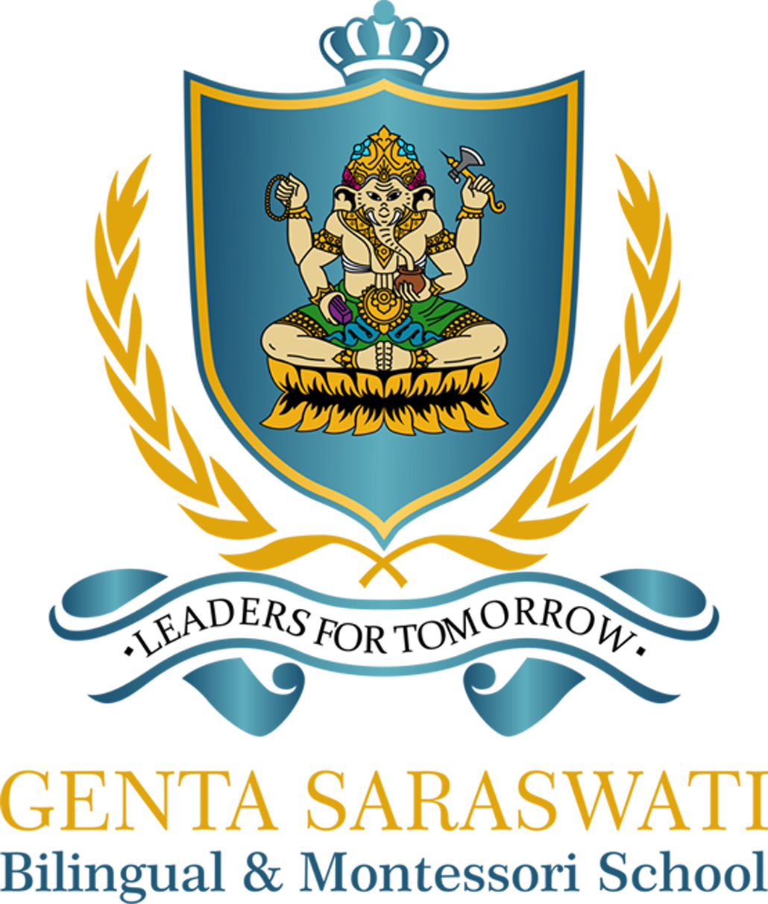
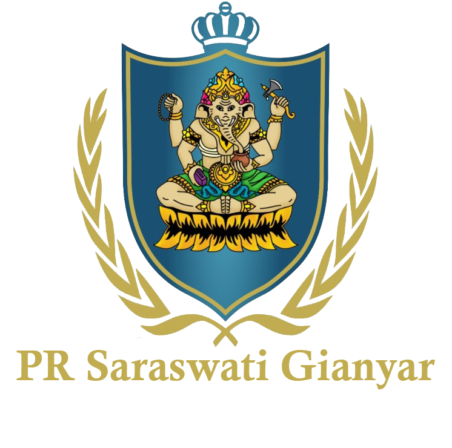
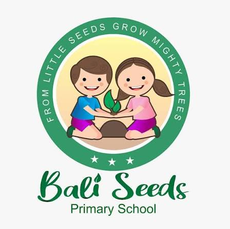

Waktu layar yang sama, hasil yang berbeda. Di LesKoding, anak 6–17 tahun belajar mengubah game, animasi, dan aplikasi favoritnya menjadi karya buatan sendiri, didampingi tutor setiap sesi.
1 sesi gratis · tanpa komitmen · bisa mulai dari nol



5 langkah terarah dari mengenal manfaat hingga si kecil menciptakan karya pertamanya.
Pilih yang paling menggambarkan anak Anda. Lihat software yang dipelajari dan karya yang dibawa pulang.
Dirancang bertahap untuk usia 6–17 tahun. Kurikulum berbasis proyek nyata dan pendampingan tutor berpengalaman.
4 kategori penghargaan · klik amplop untuk membuka
Setiap sesi maksimal 120 menit: 15 menit konsep, 90 menit praktik, dan 15 menit review. Geser waktunya dan lihat apa yang terjadi di layar anak.
Maksimal 120 menit per sesi. Tampilan layar adalah ilustrasi.
Fokus di depan laptop, tepuk tangan setelah program berjalan, foto bersama di hari event. Inilah keseharian siswa LesKoding.
Setelah laporan sesi diterbitkan, wali dapat melihat kehadiran, keterampilan yang dinilai tutor, kekuatan anak, hal yang sedang dilatih, dan rekomendasi untuk sesi berikutnya. Progres juga bisa dipantau dari waktu ke waktu.
| Nama | — |
| Materi | Coding |
| Nilai | B+ |
| Keterangan | "Baik, tingkatkan lagi." |
Arahkan kursor (atau ketuk) baris tabel untuk melihat bagiannya di laporan.
"Tekun memecahkan masalah logika rintangan dan berani mencoba solusi teknologi baru secara mandiri."
Mengukur tingkat pemahaman konsep siswa berdasarkan kemampuan menyelesaikan masalah dan tantangan arena secara terstruktur.
Mengukur kemampuan siswa mengembangkan dan memodifikasi projek di luar contoh dasar yang diberikan dengan fitur unik.
Mengukur tingkat motivasi, rasa ingin tahu yang tinggi, dan keaktifan berdiskusi selama sesi belajar berlangsung.
Mampu menjelaskan idenya dengan percaya diri dan mencoba menyelesaikan tantangan secara mandiri sebelum bertanya.
Lebih teliti saat memeriksa baris kode yang menyebabkan error syntax pada script game.
"Pada sesi berikutnya, coba uji solusi dengan beberapa contoh input berbeda untuk memastikan tidak ada celah error."
Minta anak menceritakan langkah yang ia coba dan alasan mengapa memilih langkah tersebut untuk melatih computational thinking.
Datang ke Learning Center, tutor yang datang ke rumah, atau ikut kelas online. Kurikulumnya sama.
Jln. Ksatrian No. 8, Lingkungan Candi Baru, Gianyar
Jln. Raya Semebaung, Bedulu, Blahbatuh, Gianyar
Jangkauan Area: Gianyar, Ubud, Denpasar & sekitarnya
Dari mana saja, cukup laptop & internet
Jawaban transparan seputar jadwal belajar, perangkat, usia minimal, dan sistem kelas percobaan.
Tentu bisa! Banyak siswa kami memulai dari nol. Kami mengajarkan logika berpikir terstruktur (computational thinking) melalui blok visual interaktif terlebih dahulu sebelum beralih ke sintaks kode teks asli.
Ya, kami menyediakan sesi Free Trial di Learning Center Gianyar dan Bedulu, serta opsi kelas Private di rumah sendiri (Home Visit). Anda dapat mendaftarkan jadwal percobaan melalui form di bawah atau via WhatsApp admin kami.
Setiap lab Learning Center kami sudah dilengkapi dengan PC/Laptop dan perangkat robotik siap pakai. Namun, siswa yang ingin membawa laptop pribadi agar proyek tersimpan langsung di perangkatnya sangat dipersilakan.
Kami menjaga kualitas pembelajaran dengan kelas kecil: rasio 1:5, yaitu 1 tutor mendampingi maksimal 5 siswa, agar setiap anak mendapat pendampingan intensif dan tidak ada yang tertinggal saat praktik.
Ya. Setiap siswa yang menyelesaikan course akan mendapatkan sertifikat kelulusan dari LesKoding sebagai bukti capaian belajarnya, melengkapi portofolio karya yang sudah dibuat.
Informasi biaya akan disampaikan oleh admin saat konsultasi setelah Anda mendaftar. Jadwal kelas bersifat fleksibel dan ditentukan bersama sesuai kesepakatan dengan orang tua.
Isi data singkat berikut untuk konsultasi jadwal kelas reguler atau klaim kelas percobaan gratis (trial). Konfirmasi akan otomatis diteruskan ke WhatsApp admin cabang.